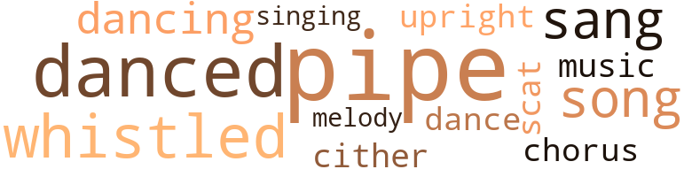
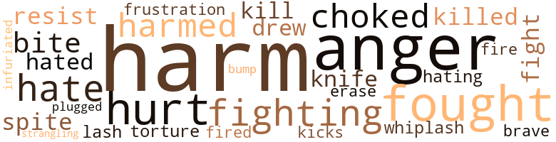

Lively House (The), by Faulkner, Blanche (1975)
32 music-related terms matched in this text.
Most frequent terms in this topic: pipe (8); danced (4); whistled (4); sang (3); song (3)
chorus.n.01
Definition: any utterance produced simultaneously by a group
| word | sentence |
|---|---|
| chorus | King Rodent snapped his fingers and instantly the room was filled with rats two to three feet tall , and asking almost in a chorus , " Why did you summon us ? " |
dance.n.01
Definition: an artistic form of nonverbal communication
| word | sentence |
|---|---|
| dance | When the room was quiet and everyone was seated , two of them detached themselves from the crowd and went into a song and dance act . |
dance.v.03
Definition: skip, leap, or move up and down or sideways
| word | sentence |
|---|---|
| dancing | It was a brisk chippy afternoon the day I went out my front door to pick up Laverne and Catherine from dancing school . |
| danced | She danced around trying to catch it . |
| danced | Jennifer sprang back in alarm , as horrible thoughts danced through her mind . |
| danced | Bridgette danced up and down as Jennifer opened the oven and peeped in . |
| dancing | She stopped dancing and asked , " Can you make a hard icing ? |
| danced | " Ohhhlihhh ! " she cried and danced up and down once more . |
melody.n.02
Definition: the perception of pleasant arrangements of musical notes
| word | sentence |
|---|---|
| melody | But as the haunting melody of a love song came on , he switched it off . |
music.n.01
Definition: an artistic form of auditory communication incorporating instrumental or vocal tones in a structured and continuous manner
| word | sentence |
|---|---|
| music | She pressed another button and music flooded the room . |
pipe.n.04
Definition: a tubular wind instrument
| word | sentence |
|---|---|
| pipe | He sat down in a chair beside the desk and took that ever-present pipe out of his mouth . |
| pipe | He was silent again for a few moments and took a few puffs on his pipe before he went on . |
| pipe | He paused and drew feverishly on his pipe for a few minutes . |
| pipe | " Now remember , " he said , pointing the pipe at them , " not a word or the tiniest sound . |
| pipe | " Not so fast , " admonished Over , pointing with his pipe . |
| pipe | He was smoking a pipe , and as she glanced up at his face he took it out and smiled at her . |
| pipe | He put his pipe back in his mouth and stepped down . |
| pipe | There , directly in front of them , stood the zoot-suited man with a pipe in his mouth . |
scat.n.01
Definition: singing jazz; the singer substitutes nonsense syllables for the words of the song and tries to sound like a musical instrument
| word | sentence |
|---|---|
| scat | Then that long table began to fill up with other ghostly forms , leaving an empty scat by Stephanie . |
sing.v.02
Definition: produce tones with the voice
| word | sentence |
|---|---|
| sang | " At last we are on our way ! " she sang . |
| sang | I won ! " she sang . |
| sang | " No ! " the three ghostly figures sang out together . |
singing.n.01
Definition: the act of singing vocal music
| word | sentence |
|---|---|
| singing | Although the morning outside was bright and beautiful , the birds singing and playing and calling to each other , inside a cold eerie stillness developed the place . |
song.n.01
Definition: a short musical composition with words
| word | sentence |
|---|---|
| song | He smiled wistfully as he understood how that song writer felt when he wrote , " For Your Love I 'll Do Anything " . |
| song | When the room was quiet and everyone was seated , two of them detached themselves from the crowd and went into a song and dance act . |
| song | But as the haunting melody of a love song came on , he switched it off . |
upright.n.02
Definition: a piano with a vertical sounding board
| word | sentence |
|---|---|
| upright | Besides talking and understanding , we 've grown to tremendous heights and we can walk upright , " he informed her . |
whistle.v.01
Definition: make whistling sounds
| word | sentence |
|---|---|
| whistled | She walked gingerly across that soft , deep piled carpet and , opening a door , she entered a bathroom and whistled ! |
| whistled | " Donovan Over ! " whistled Richard . |
| whistled | " Whew ! " whistled Richard . |
| whistled | She stepped into that sunlit room and whistled . |
zither.n.01
Definition: a musical stringed instrument with strings stretched over a flat sounding board; it is laid flat and played with a plectrum and with fingers
| word | sentence |
|---|---|
| cither | " You are not related cither , unless you arc cousins ? " continued the ghost-man . |
89 violence-related terms matched in this text.
Most frequent terms in this topic: harm (18); fought (6); anger (5); hurt (5); fighting (5)
anger.n.01
Definition: a strong emotion; a feeling that is oriented toward some real or supposed grievance
| word | sentence |
|---|---|
| Anger | Anger stung him as her words affected him like a whiplash and he retorted , " Like what ? " |
| anger | Terrence wondered why he did not like that , and hoped it would not rouse his anger . |
| Anger | Anger for the injustice being done to his girls tinged his voice . |
| Anger | Anger and humiliation took possession of her , and once again Terrence had a marvelous view of her breast when she slapped two of the women . |
| anger | She saw anger in the faces of the women . |
| anger | When he mentioned what their uncle did , he could see anger in their faces . |
| anger | I just want to get away from it , " she cried , anger fighting fear in her voice , as she staggered to her feet . |
| anger | Jennifer , not wanting to anger him again , took them and handed one to Stephanie . |
bump.n.01
Definition: a lump on the body caused by a blow
| word | sentence |
|---|---|
| bump | " I am looking for marks of a blow , or a bump , " he answered , as his fingers worked gently down her back . |
draw.v.23
Definition: pull (a person) apart with four horses tied to his extremities, so as to execute him
| word | sentence |
|---|---|
| drew | Jennifer gasped , as the car drew up behind hers and Terrence , tall and stately , stepped out . |
| drew | He drew up alongside her , and opened the car door . |
erase.v.01
Definition: remove from memory or existence
| word | sentence |
|---|---|
| erase | " Maybe for a few minutes I can erase that negative thinking from your mind . " |
fight.v.02
Definition: fight against or resist strongly
| word | sentence |
|---|---|
| fight | When her brother brought up the subject of marrying Amsbury again , she was too beat and sick to fight back ; besides she said she could not face the scandal that would ensue if she did not marry that man right away . |
| fought | Well we fought for two years , until it ended one rainy afternoon . " |
| fighting | Stephanie , fighting an awful feeling in her stomach , was quiet , as she looked around for signs of other ghosts . |
| fought | They fought all day , throwing furniture all over the place , They made themselves invisible at times , then Don got the better of George and froze off one of his legs and took it off , then he did the same thing to his right arm . |
| fought | " No , no , no , you ca n't do that ! " she screamed , and she fought to keep on her blouse as she remembered she was naked under it , and Terrence , a stranger to her , was still in the room . |
| fought | Although she fought and pleaded , her words and efforts went unnoticed . |
| fighting | " Not now , " she retorted fighting desperately . |
| fought | He fought it for awhile but soon he closed the book and let thoughts of her take over . |
| fighting | " Please , I do n't want to think about that ! " cried Stephanie , fighting back tears , as she ran up the short flight of stairs . |
| fought | She fought to get away , but he held her firmly and talked to her softly but sternly until she stopped struggling . |
| fighting | " I had that wild thought myself , " confessed Stephanie , as she sat fighting that feeling in her stomach . |
| fighting | I just want to get away from it , " she cried , anger fighting fear in her voice , as she staggered to her feet . |
| fight | His sharp voice helped her to fight off the wave of nausea that overtook her . |
frustration.n.03
Definition: a feeling of annoyance at being hindered or criticized
| word | sentence |
|---|---|
| frustration | " If you hurt her I 'll , I 'll ... " but he stopped in frustration as he asked himself , " What can I do to them ? |
gag.v.06
Definition: cause to retch or choke
| word | sentence |
|---|---|
| choked | She had a hard time because the fence was choked with weeds . |
| choked | I nearly choked when I looked into their faces . |
| choked | " I will try , " she choked . |
| choked | " Him , who ? " choked Stephanie . |
harm.v.01
Definition: cause or do harm to
| word | sentence |
|---|---|
| harm | I do n't know half of what he said , but I gathered something about do n't harm him , and if I let him go he 'd do anything I ask . |
| harm | But Jennifer , gaining control of herself as she realized the ghost was n't going to harm them unless they tried to leave , asked , " Do you think it is true ? " |
| harm | Then with an assuring smile on his face he said , " They are not going to harm her . |
| harm | How can I carry out that man 's request if he was going to harm his Jennifer ! |
| harm | If I harm any of you I wo n't get that done . |
| harmed | Was that the reason she was not harmed by Donovan and his friends ? |
| harm | She felt a little more confident , though , that even if they were going to harm her eventually , now was not the time . |
| harmed | What if Over did not keep his word and harmed them as soon as Terrence left . |
| harm | He tried to tell himself that Donovan would not harm the girls . |
| harm | You know Donovan wo n't harm you . |
| harms | He wants his children to have his name and his estate , and he wo n't accomplish that if he harms any one of you . |
| harm | When he was through speaking they dried their eyes and Catherine said , " I do n't think he 'll harm them , not if we mean so much to him . " |
| harm | " My father wo n't harm them if you carry out his wish , " she told him . |
| harmed | " You arc leaving to go to our father 's house to see if he has harmed those girls , " accused Laverne . |
| harm | Besides I agree with the girls , their father wo n't harm the other two . |
| harmed | My lord , he groaned silently , we really would be in a lot of trouble if those girls were harmed . |
| harm | It is a known fact that we do not touch or harm women in that condition . " |
hate.v.01
Definition: dislike intensely; feel antipathy or aversion towards
| word | sentence |
|---|---|
| hating | " Where are you going ? " he asked , hating to change the subject , but he had noticed that they were beginning to attract the attention of the few people who passed them . |
| hates | I think that woman hates me ! |
| hates | " And if that woman hates me and she belongs to Mr. Over that means if anything happens to anyone of us it will be me . " |
| hate | ' They do not hate her , it is me they are after . |
| hate | ' Do all the ghosts and now even the rats hate her ? |
| hate | That they do not hate Stephanie and wo n't do anything to her . |
| hated | He hated to leave her but he said , " I do n't think anything else will happen tonight , so I 'll leave you so that you can go to bed . |
| hated | " My Uncle Darin hated him , " added Laverne . |
hurt.v.04
Definition: cause damage or affect negatively
| word | sentence |
|---|---|
| hurt | That silent statement hurt so much that he knew this was not a passing fancy . |
| hurt | " True , but hurt as you would have been , you might not have cared what happened to her . |
infuriate.v.01
Definition: make furious
| word | sentence |
|---|---|
| infuriated | That infuriated her even more , and wanting to get out of the house to prove that a mere non-substance thing could not keep her in the house , she rushed at him trying to get past him . |
injury.n.01
Definition: any physical damage to the body caused by violence or accident or fracture etc.
| word | sentence |
|---|---|
| harm | That enlightened Donovan Over , now he knew she would do anything to save her friend from harm . |
| harm | " There is n't any harm in that , " Over said . |
| harm | If I had intended any further harm you would n't be sitting here so calmly . " |
| harm | ' If any harm comes to her I 'll find some way to kill that man again , ' he vowed savagely . |
| harm | They all exchanged glances wordlessly , realizing that Donovan could contact them whenever and wherever he felt like it , and they also realized and believed then that he never meant them any harm . |
| harm | What harm could he do to her ? |
kick_back.v.02
Definition: spring back, as from a forceful thrust
| word | sentence |
|---|---|
| kicks | What kind of unearthly kicks are you after ? |
kill.v.10
Definition: cause the death of, without intention
| word | sentence |
|---|---|
| killed | Bridgette , who was shopping with her parents , was killed instantly , and a few other people were hurt , but not fatally . |
| killed | " You remember Mr. Over said he was going to a costume party when he was killed . " |
| kill | Would we deliberately kill that hope ? |
| kill | ' If any harm comes to her I 'll find some way to kill that man again , ' he vowed savagely . |
knife.n.02
Definition: a weapon with a handle and blade with a sharp point
| word | sentence |
|---|---|
| knife | He picked up a potato and a knife . |
| knife | He sank the knife deep into the potato , and making a sweeping action , took a large portion of the potato off with the skin . |
malice.n.01
Definition: feeling a need to see others suffer
| word | sentence |
|---|---|
| spite | In spite of their frightening circumstance they were caught up in Donovan 's love life and they wanted to hear the rest of the story . |
| spite | " Dead business , " said Terrence , and chuckled in spite of himself . |
open_fire.v.01
Definition: start firing a weapon
| word | sentence |
|---|---|
| fired | And I want that scalawag of a lawyer fired . " |
| fire | " Wait a minute , " spoke up Terrence , " I may not be able to fire him . |
pain.v.02
Definition: cause emotional anguish or make miserable
| word | sentence |
|---|---|
| hurt | She halted , fearing that if she did not listen they would hurt Jennifer . |
| hurt | " Please do n't hurt them , " she begged . |
| hurt | But they were not being hurt . |
punch.v.01
Definition: deliver a quick blow to
| word | sentence |
|---|---|
| plugged | She measured out the coffee and plugged in the coffee pot . |
resist.v.04
Definition: withstand the force of something
| word | sentence |
|---|---|
| resist | When they were through , she could not help feeling vibrant and pampered , and she could not resist giving them a half-smile . |
| resist | But he could not resist teasing her and he whispered softly in her ear , " Would n't it be just great if we could tell our grandchildren that our first child began in a haunted house ! " |
sting.n.03
Definition: a painful wound caused by the thrust of an insect's stinger into skin
| word | sentence |
|---|---|
| bite | I 'll have a bite on the road . |
| bite | He picked up the sandwich and took a small bite . |
| bite | So please take your time packing and have a bite to eat . |
strangle.v.01
Definition: kill by squeezing the throat of so as to cut off the air
| word | sentence |
|---|---|
| strangling | All of a sudden she was enmeshed in a cold , clammy , strangling cloud , and just as suddenly she found herself beside her chair . |
torment.v.01
Definition: torment emotionally or mentally
| word | sentence |
|---|---|
| torture | What dreadful torture did he have in store for them ? |
weather.v.01
Definition: face and withstand with courage
| word | sentence |
|---|---|
| brave | Angry though she was she knew her brave words were meaningless ! |
whip.v.04
Definition: strike as if by whipping
| word | sentence |
|---|---|
| lash | His thoughts continued to lash him . |
whiplash.n.01
Definition: an injury to the neck (the cervical vertebrae) resulting from rapid acceleration or deceleration (as in an automobile accident)
| word | sentence |
|---|---|
| whiplash | Anger stung him as her words affected him like a whiplash and he retorted , " Like what ? " |
12 religion-related terms matched in this text.
Most frequent terms in this topic: God (3); heaven (3); church (2); god (1); heavens (1)
church.n.02
Definition: a place for public (especially Christian) worship
| word | sentence |
|---|---|
| church | The day of the wedding I hid among the spectators outside the church and saw her go in a young miss and come out Mrs. George Amsbury . " |
| church | We attended the same school and church and have almost the same circle of friends . " |
eden.n.01
Definition: any place of complete bliss and delight and peace
| word | sentence |
|---|---|
| heaven | " Oh heaven help us ! " wailed Stephanie , as she continued to suffer that unfamiliar feeling . |
| heavens | He did not know about the girls , but personally he would rather have them here than off in another part of the house planning heavens knows what horror for them if he failed A shiver ran through him as the thought came to him that a man as precise as Mr. Over had his plans already made . |
| heaven | " You do n't think I 'd do that with heaven knows how many unseen eyes watching us ? " |
god.n.03
Definition: a man of such superior qualities that he seems like a deity to other people
| word | sentence |
|---|---|
| God | Raising his voice a little Dr. Thaddeus demanded , " Then for God 's sake , man , what is the matter with you ? " |
| God | " My God Terrence , what are they going to do to her ? " she cried . |
| god | " Good god Thaddeus , you mean it could have happened ? " exclaimed Dr. Rover . |
| God | " Jenn , for God 's sake what are you saying ? " cried Stephanie , beginning to shake . |
heaven.n.02
Definition: the abode of God and the angels
| word | sentence |
|---|---|
| heaven | Thank heaven it was beating ! |
saint.n.02
Definition: person of exceptional holiness
| word | sentence |
|---|---|
| saints | No , I take that back , " she laughed , " from some of the stories I 've heard , most of the grandmothers were n't saints ! " |
shaker.n.02
Definition: a member of Christian group practicing celibacy and communal living and common possession of property and separation from the world
| word | sentence |
|---|---|
| shaker | " You 've turned me into one giant shaker , but I love it . " |